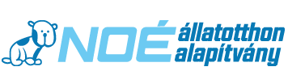
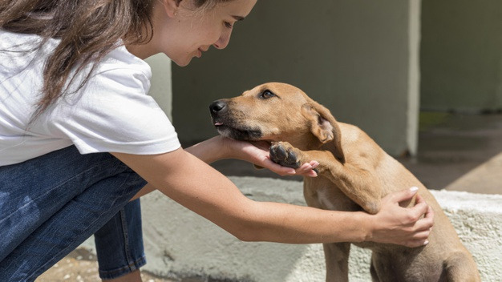

Több mint 1000 állatról gondoskodunk
Segítese a munkánkat
A NOÉ Állatotthon Alapítvány Budapest legnagyobb állatmenhelye 1992 óta végezi a bajba jutott, megkínzott, balesetet szenvedett állatok mentését.

A Noé Állatotthon Alapítvány Macskamentő Projektje 2010. augusztusában alakult macskaszerető önkéntesek részvételével, hogy a tömegesen érkező, beáramoló cicák elhelyezésében és ellátásában logisztikai segítséget nyújtsanak. A projekt fő célja a rászoruló, sérült, altatásra ítélt cicák szervezett mentése, gyógykezelése és gazdához juttatása.
Egyik legfontosabb célkitűzésünk az oktatási szférában való részvétel és a társadalom szemléletváltozásának elősegítése, a felelős állattartásra nevelés. Ennek keretein belül 2004 tavaszától elindult Állatvédelmi Oktató Programunk, melynek részeként általános és középiskolás csoportok "kihelyezett" biológia óráikat állatotthonunkban tartják, illetve iskolanapokra, osztályfőnöki órákra látogatunk el.
Estelle
Született: 2009.06.06.
Bekerült: 2020.11.10.
További Információ
Béni
Született: 2020.06.20.
Bekerült: 2020.11.17.
További
Információ
Telepi Talpas
Született: 2019.09.01.
Bekerült: 2020.11.08.
További Információ
Tappancs
Született: 2010.06.01.
Bekerült: 2020.11.10.
További Információ